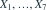
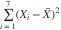
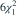
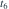
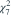
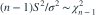

独立同分布为N(0,1)。
的分布是？- A

- B

- C

- D

我已思考，展开答案与解析
正确答案：C
- 正态样本有

。 - 这里σ²=1，中心化平方和等于6S²，因此服从 。
易错提醒各中心化偏差之和为0，存在一个线性约束。
考后回忆 · 条件重建 · 回忆9
依据考试回忆重建；数字、选项和必要条件为补充设定，非原题。

独立同分布为N(0,1)。
的分布是？



。。考后回忆 · 条件重建 · 回忆9
依据考试回忆重建；数字、选项和必要条件为补充设定，非原题。